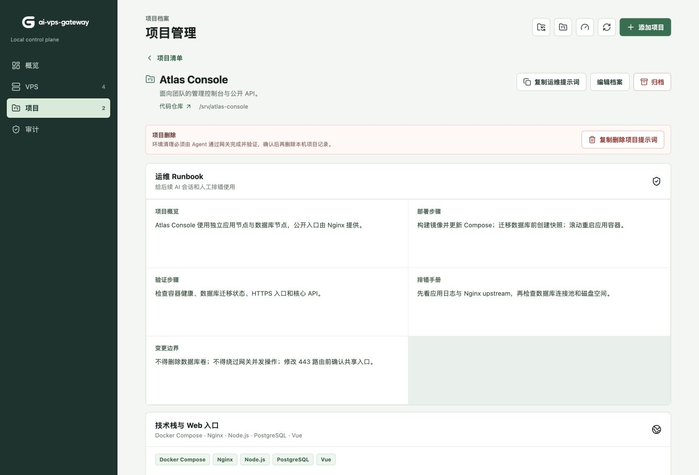
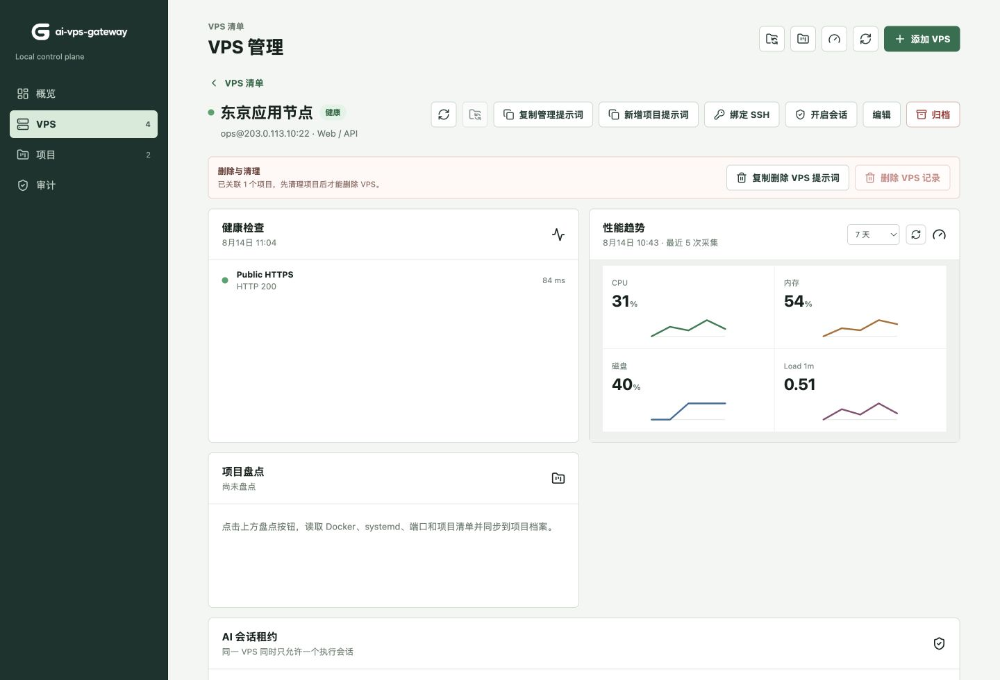

01 / VPS
先知道它活着
TCP、SSH Banner 和 HTTP(S) 共同判断状态，不把 ICMP Ping 当成唯一答案。
HEALTH / METRICS私钥留在你的 Mac。AI 只获得被记录的执行路径。
展示图使用仓库内演示数据和保留 IP 地址。
服务器、端口、运行方式、公开入口和变更边界不再散落在不同会话里。网关把它们连成可查询、可审计的本机运维上下文。
TCP、SSH Banner 和 HTTP(S) 共同判断状态，不把 ICMP Ping 当成唯一答案。
HEALTH / METRICS技术栈、服务、端口、域名入口和排错顺序，留在能被下一次会话读懂的项目档案里。
RUNBOOK / CONTEXT每台 VPS 独占租约，会话排队，命令脱敏审计，私钥永远不进入 Codex 或 Claude。
LEASE / AUDIT手动登记资产，完成 SSH 绑定，再让网关按 TCP、SSH Banner 和 HTTP(S) 检查状态。性能快照和趋势留在本机，不需要给每台服务器安装常驻 Agent。

项目档案保存技术栈、服务管理器、端口映射、Web 入口和五段式 Runbook。后续 AI 会话先读上下文，再申请会话和执行操作。
查看项目结构新 VPS 自动生成专用公钥。你只需通过云控制台或已有入口完成一次安装，再点击测试绑定。
只读盘点 Docker、systemd、PM2、端口和 Nginx 路由，生成可编辑的项目档案与 Runbook。
同一台 VPS 同时仅一个执行会话，其余请求排队。AI 不会得到私钥或本机任意 SSH 路径。
命令、结果和高危提示经过脱敏后进入审计记录，运维摘要与 Runbook 留作后续上下文。
open_session → run_command → audit → close_session
READY
本机控制边界，不是“绝对安全”的包装。每一次执行都要经过网关、租约和审计。
凭据由本机网关持有，MCP 客户端只能请求受控操作。
每台 VPS 有独占会话、排队、空闲超时和最长时限。
常见不可逆命令被阻断，高危行为留下审计警告。
它不是 OS 沙箱。同一 macOS 用户下的不受信任进程仍应被隔离。
网关为后续会话提供当前性能、健康检查、项目关联与已执行操作。AI 的执行入口仍是 MCP，而不是把私钥复制进每一个会话。
查看 MCP 使用方式
桌面客户端把本机 API、WebUI、MCP 适配器和菜单栏入口合在一起。源码模式同样保持 API 仅监听 loopback。
$ npm install
$ npm run dev
# Register the local MCP adapter
$ codex mcp add ai-vps-gateway -- npm --prefix
/path/to/ai-vps-gateway run mcp